weekday — モーション案（SVGアニメーション）
フォントは仮。採用案が決まれば G_02_weekday.js に実装します。SVGファイルは motion/ フォルダ内（単体でブラウザ表示可）。
A 呼吸 — 全体が4秒周期でゆっくり拡縮（scale 1.00→1.03）

L

R
B 明滅 — ピリオド／括弧が1秒周期で明滅（時計のコロンと同期する想定）
L
R
C 間 — 字間／括弧が6秒周期でゆっくり開いて閉じる
L
R